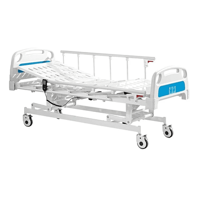
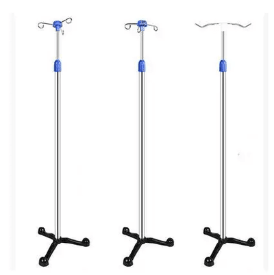
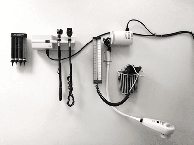

OUR PRODUCTS:

Our Price: JOD 245 $
Descreption:
A bed having side rails that can be raised or lowered and a mattress base in three jointed sections so that the head, foot, or middle may be raised by a crank or motor, allowing a patient to lie in various positions, as a therapeutic aid or for comfort.
.png)
Our Price: JOD 250 $
Descreption:
The ventilator makes good performance in operating room, LCU department and emergency treatment. It is used to assist or replace spontaneous breathing in adults, children and newborns over 2 kg
.png)
Our Price: JOD 1500 $
Descreption:
Imagine that to see the internal organs of the body, scientists and doctors in the past had no choice but to dissect the body, which is what Felix Bloch and Edward Purcell did in 1945 when they invented the magnetic resonance device and won the Nobel Prize, and the device developed to reach closed magnetic resonance. 1977, going through different stages. Since then, the device has revolutionized the medical field to this day. 20 years later, we came up with the newest device: the open MRI. Here is what the closed MRI looks like

Our Price: JOD 7o $
Descreption:
The substance that helps the patient recover from various diseases, its forms vary depending on the use, and the patient’s condition controls the form of the medicine that is appropriate for him. In some medical cases, the patient can take the tablets while sitting at home, while in some other cases he must remain in the hospital to receive the injections.

Our Price: JOD 45 $
Descreption:
Medical device supplies include more modern medical devices, such as hearing aids, blood sugar monitors, blood pressure measuring devices, temperature measuring devices, and others. These medical supplies help improve the quality of health care, reduce the risks of infections and surgeries, improve the effectiveness of treatment and reduce costs associated with health care.